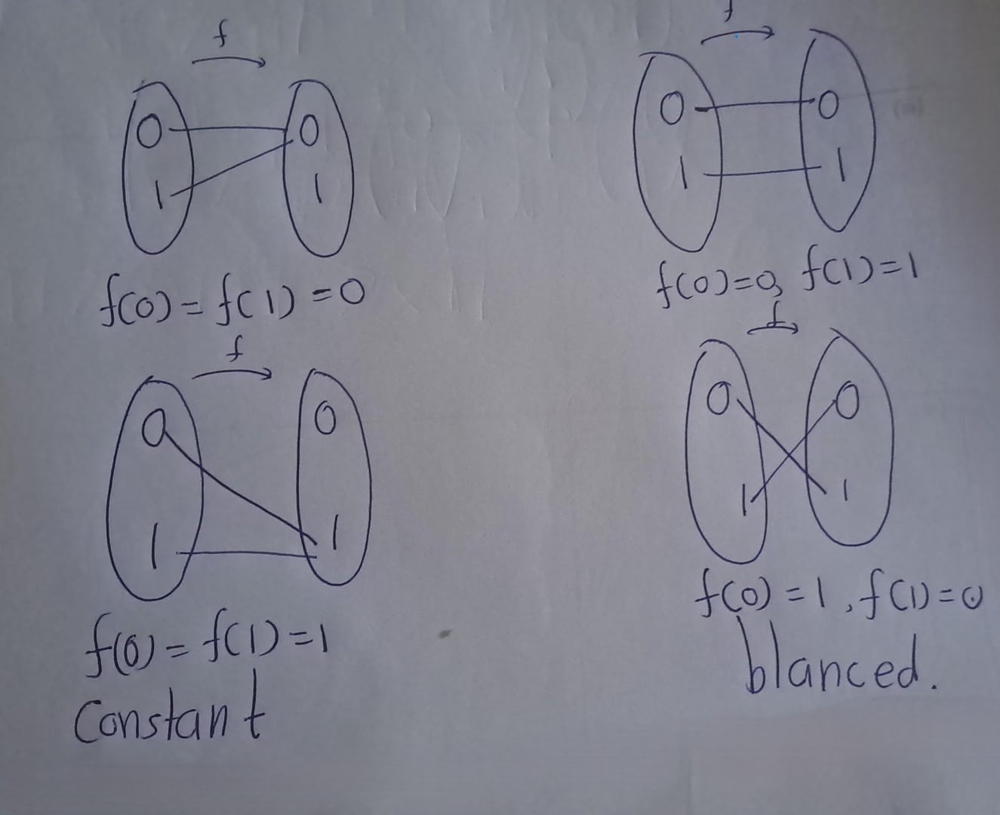
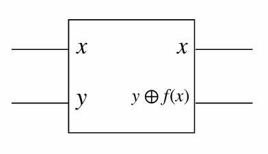
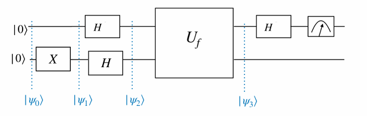

Chapter 4 Deutsch’s

An early stage quantum algorithm that demonstrates the computational power of quantum computers is the algorithm invented by David Deutsch in 1985.
Deutsch’s algorithm is based on quantum parallelism - in this context, the ability to evaluate a function \(f(x)\) at different \(x\) values simultaneously
Consider functions from a one-bit domain \(\{0, 1\}\) to the same one-bit co-domain. There are two types of functions: constant and balanced.
We are given a function:
\[f : \{0,1\} \to \{0,1\}\]
Our goal is to determine whether f is:
- Constant: \(f(0) = f(1)\) (same output for both inputs)?
- Balanced: \(f(0) \neq f(1)\) (different outputs for each input)?

4.0.0.1 Classical Solution,
*Algorithm 1: Classical Algorithm for the Deutsch Problem (\(n = 1\))**
Require: A black-box function \(f : \{0,1\} \rightarrow \{0,1\}\)
1: Evaluate: Compute \(f(0)\) and \(f(1)\).
2: if \(f(0) = f(1)\) then
3: \(~~~~~~\) Output: “Constant”
4: else
5: \(~~~~~~\) Output: “Balanced”
6: end if
Explanation
- Line 1: Input is a black-box function \(f : \{0,1\} → \{0,1\}\).
- Line 2: Evaluate the function at both possible inputs \((0\) and \(1)\).
- Line 3–6: Compare the outputs:
- If \(f (0) = f(1)\), then the function is constant.
- If \(f (0)= f(1),\) then the function is balanced.
Classically, two queries to the function are necessary to determine this. Deutsch’s algorithm provides a quantum protocol to do this with a single query to the function
Exercise 4.1 Let \(x, y \in \{0, 1\}\) and \(f : \{0, 1\} \to \{0, 1\}\). Show that the transformation:
\[ U_f |x, y\rangle = |x, y \oplus f(x)\rangle \]
where \(\oplus\) denotes addition modulo 2, is unitary.
Solution
The above transformation can be implemented in a quantum circuit by querying an oracle.
Diagram: 
This quantum circuit queries an oracle, and implements \(U_f\)
Note that the transformation can be written as:
\[ U_f \big(|+\rangle , |0\rangle\big) = \frac{1}{\sqrt{2}} \big(|0, f(0)\rangle + |1, f(1)\rangle\big). \]
This contains information about both \(f(0)\) and \(f(1)\). That is like evaluating the function \(f\) at two different points in the domain. This is called Quantum parallelism.
\[ \begin{eqnarray} U_f |x, -\rangle &=& U_f \left( |x\rangle \otimes \left( \frac{1}{\sqrt{2}} |0\rangle - \frac{1}{\sqrt{2}} |1\rangle \right) \right)\\ &=& \frac{1}{\sqrt{2}} U_f (|x\rangle \otimes |0\rangle) - \frac{1}{\sqrt{2}} U_f (|x\rangle \otimes |1\rangle)\\ &=& \frac{1}{\sqrt{2}} |x, f(x)\rangle - \frac{1}{\sqrt{2}} |x, 1 \oplus f(x)\rangle. \end{eqnarray} \]
- When \(f(x) = 0\):
\[ U_f |x, -\rangle = \frac{1}{\sqrt{2}} |x, 0\rangle - \frac{1}{\sqrt{2}} |x, 1\rangle. \]
- When \(f(x) = 1\):
\[ U_f |x, -\rangle = -\frac{1}{\sqrt{2}} |x, 0\rangle + \frac{1}{\sqrt{2}} |x, 1\rangle. \]
Then we can summarize,
\[ U_f |x, -\rangle = (-1)^{f(x)} |x, -\rangle. \] This is called Phase kickback.
Deutsch’s algorithm is a black box algorithm, that uses quantum parallelism, and can be implemented efficiently using a quantum computer.
Given a function \(f :\ {0,1\} \rightarrow \{0,1\}\), Deutsch’s algorithm determines whether \(f\) is constant or balanced, with a single query to the function

\[\begin{eqnarray} |\psi_0\rangle &=& |00\rangle\\ |\psi_1\rangle &=& |0\rangle X|0\rangle = |01\rangle\\ |\psi_2\rangle &=& H|0\rangle H|1\rangle = |+\rangle|−\rangle\\ |\psi_3\rangle &=& U_f| +,−\rangle\\ &=& U_f \left( \frac{1}{\sqrt{2}} |0, -\rangle + \frac{1}{\sqrt{2}} |1, -\rangle \right)\\ &=& \frac{1}{\sqrt{2}} U_f |0, -\rangle + \frac{1}{\sqrt{2}} U_f |1, -\rangle &=& \end{eqnarray} \]
Then, \[\text{Phase kickback } U_f |x, -\rangle = (-1)^{f(x)} |x, -\rangle \quad \text{for } x \in \{0, 1\}. \]